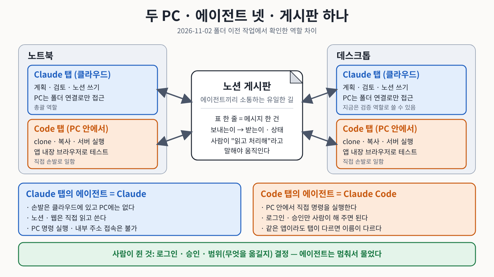

두 PC를 잇는 Claude 에이전트
노트북과 데스크톱의 폴더를 골라 옮긴 하루의 기록 · 2026. 11. 2.
에이전트 넷이 두 대의 PC에서 이전 작업을 나눠 맡았습니다.
목표는 노트북과 데스크톱에 흩어진 작업 폴더 중 필요한 것만 골라 데스크톱으로 옮기는 것이었습니다. 이 일을 Claude 데스크톱 앱의 두 탭과 두 대의 PC로 나누어 시켰습니다.
Agent(에이전트, 代理人): 사람을 대신해 일을 맡아 처리하는 주체입니다. 일상의 ‘대리인’이 서류를 대신 처리하듯, AI 에이전트는 내 지시를 받아 일을 대신 합니다.
- 노트북-Claude: 노트북 앱의 Claude 탭. 계획을 세우고 요청서를 쓰는 총괄입니다.
- 노트북-Code: 노트북 앱의 Code 탭. 노트북 안에서 직접 조사하고 복사합니다.
- 데스크톱-Claude: 데스크톱 앱의 Claude 탭. 이번에는 검증 역할로 쓸 수 있었습니다.
- 데스크톱-Code: 데스크톱 앱의 Code 탭. 데스크톱 안에서 내려받고, 실행하고, 테스트합니다.
에이전트들은 노션 게시판 하나로만 소통했습니다.
에이전트끼리는 직접 대화할 수 없었습니다. 탭끼리도, PC 사이도 마찬가지로 막혀 있었습니다. 그래서 노션 페이지 하나를 공용 게시판(揭示板), 곧 알림을 걸어 두는 판으로 정하고, 모든 메시지를 표의 한 줄로 남겼습니다.
- 한 줄 형식: 번호 / 보내는이 → 받는이 / 종류(요청·결과·질문·결정요청) / 내용 / 상태(대기·진행·완료)
- 에이전트는 스스로 깨어나지 않습니다. 사람이 해당 탭에 “게시판 읽고 나에게 온 대기 메시지 처리해”라고 말하면 읽고 움직입니다.
- 비밀 값(.env, API Key)은 게시판에 적지 않고 “있음/없음”만 적습니다.
동네 아파트 게시판에 쪽지를 붙이면 이웃이 와서 읽고 답을 붙이는 방식과 같습니다. 우편함처럼 사람이 열어 줘야 전달됩니다. 앞에서 본 Harness의 ‘파일 기반 Handoff’를 노션 표로 옮긴 모습이기도 합니다.
Claude 탭은 폴더 연결로만 내 PC를 읽습니다.
Claude 탭의 에이전트는 인터넷과 노션에 연결된 Cloud(클라우드, 구름), 곧 인터넷 너머 서버에서 돌아가는 환경에서 일합니다. 내 PC 안은 기본으로 볼 수 없어서, 폴더 추가 기능으로 연결을 요청했고 제가 허락했습니다.
- 대화를 시작할 때 PC의 폴더를 하나 지정하면, 그 폴더 아래만 읽을 수 있습니다.
- 같은 대화를 다른 PC의 앱에서 이어 열면, 대화는 클라우드에 있으니 내용이 그대로 보입니다.
- 그러나 그 대화 안에서 폴더 지정은 바꿀 수 없었습니다. 그래서 데스크톱에서는 새 대화를 열어 폴더를 다시 지정해야 했습니다.
이번 작업에서 제가 직접 겪은 동작을 적은 것이며, 앱 버전이 바뀌면 달라질 수 있습니다.
Claude 탭의 손발은 클라우드에 있고 내 PC에는 없습니다.
처음 제 가설은 “Claude 탭에는 손발이 없어서, 사람에게 요청하거나 복사해서 전달만 한다”였습니다. 이번 작업에서 실제로 쓴 도구를 확인해 보니 반만 맞았습니다.
| 할 수 있는 일 | Claude 탭 | Code 탭 |
|---|---|---|
| 일하는 곳 | 클라우드 작업 공간 | 내 PC 안 |
| 웹 검색, 노션 읽고 쓰기 | 가능. 게시판은 직접 고침 | 가능(로그인 상태에 따라) |
| 내 PC 폴더 보기·복사 | 연결한 폴더만, 목록 보기와 파일 복사 | 허용한 범위의 모든 경로 |
| 명령 실행(내려받기, 복사 등) | 불가. 이번 작업에는 PC에서 명령을 실행하는 도구가 없었음 | 가능 |
| PC 안 서버(127.0.0.1) 접속 | 불가(클라우드에서는 PC 내부 주소에 닿지 않는 것으로 추정) | 가능 |
| 브라우저로 화면 테스트 | 이번에는 연결되지 않아 못 함 | 가능(앱 내장 브라우저) |
그래서 가설을 두 군데 고쳤습니다.
- “손발이 없다”가 아니라, 손발이 클라우드에는 있고 내 PC에는 없다.
- “복사해서 전달만 한다”가 아니라, 노션 게시판은 직접 읽고 썼습니다. 다만 PC에서 해야 할 일은 사람에게 부탁하는 일이 많아서 그렇게 보였습니다.
Code 탭은 내 PC 안에서 직접 손발로 일합니다.
Code 탭의 에이전트는 내 PC 안에서 돌아가는 Local(로컬) 에이전트입니다. 로컬은 ‘이 자리’, 곧 ‘내 컴퓨터 안’을 뜻합니다. 인터넷 너머 회사의 컴퓨터를 가리키는 클라우드의 반대말입니다. 그래서 같은 요청도 직접 해냈습니다.
- GitHub 저장소 7개를 한 번에 내려받기(clone)
- USB로 복사한 파일의 개수와 크기를 원본과 비교하고, 목록 파일을 직접 작성
- 도구 폴더를 읽고 재사용 안내서를 작성
- 프로그램 서버를 켜고 화면을 열어 테스트
일하기 전에 사람이 정한 안전선도 지켰습니다. 삭제, 비밀 파일 열기, 공개 배포는 하지 않았고, 필요하면 멈춰서 물었습니다.
Code 탭이 브라우저 테스트까지 해낸 이유가 있습니다.
다른 도구에서는 브라우저를 쓰려면 MCP(Model Context Protocol, 모델 맥락 규약)를 따로 연결합니다. 에이전트에 도구를 꽂는 표준 규격입니다. 이번에는 그런 설정이 없었는데도 되었습니다. 기록으로 확인된 순서입니다.
- 데스크톱-Code가 안내서(README)대로 서버를 PC 안에서 켰습니다. 에이전트가 PC 안에서 돌기 때문에 가능했습니다.
- 앱 안에 들어 있는 브라우저로 127.0.0.1 주소를 열었습니다. 사이트마다 사람의 승인이 필요했습니다.
- 관리자 로그인은 사람이 직접 했습니다. 비밀번호 입력은 에이전트가 하지 않습니다.
- 앱 안 브라우저는 앱 전용 연결 주소를 Windows에 넘기지 못했습니다. 그래서 사람의 승인을 받아 Windows에서 직접 실행했습니다.
- 결과(정상·오류·원인)를 게시판 표에 적었습니다.
이유를 한 줄로 줄이면, PC 안에서 도는 에이전트에게는 PC의 명령 창·파일·내부 주소가 모두 보이고, 앱이 브라우저를 내장 도구로 제공하기 때문입니다. 클라우드의 Claude 탭에는 이 둘이 없습니다. 이 해석은 이번 기록에 근거한 제 추정이며, 앱의 내부 구조까지 확인한 것은 아닙니다.
처음에는 “Windows 브라우저를 직접 쓴 것”이라고 생각했지만, 실제로는 앱 안 브라우저를 썼습니다. Windows를 직접 쓴 것은 연결 주소를 여는 순간뿐이었습니다.
Claude와 Claude Code는 일하는 탭으로 가릅니다.
Claude(클로드)는 대화·글쓰기·조사를 하는 AI이고, Claude 탭에서 일하는 에이전트입니다. Claude Code(클로드 코드)는 내 컴퓨터 안에서 명령을 실행하며 코딩과 파일 작업을 하는 에이전트이고, Code 탭에서 일하는 에이전트입니다.
헷갈리기 쉬운 두 질문이 있었습니다.
- 데스크톱 앱에서 쓰면 무조건 Claude Code인가? 아니요. 같은 앱이라도 Claude 탭에서 일하면 그냥 Claude입니다.
- Code 탭의 에이전트만 Claude Code인가? 데스크톱 앱 안에서는 그렇습니다. 다만 Claude Code는 터미널, 웹, VS Code 같은 개발 도구에서도 쓰이는 제품 이름이라, 앱 밖에서도 같은 이름입니다.
가르는 원리는 이렇습니다. 앱은 건물, 탭은 방입니다. 방마다 하는 일이 다릅니다. 이름은 “어느 앱인가”가 아니라 “어느 방에서 어떤 손발로 일하는가”로 정해집니다.
실제 사용 예 두 가지
- 예 1
- Code 탭에서 “저장소 7개를 내려받아 줘”라고 시켰다 → 일한 쪽은 Claude Code.
- 예 2
- Claude 탭에서 노션 게시판을 읽고 다음 요청서를 썼다 → 일한 쪽은 Claude(Claude Code가 아님).
Code라는 말의 뜻
Code(코드, 法典·符號)는 컴퓨터가 따르는 규칙을 적은 글, 곧 프로그램입니다. 법전이나 암호도 code라고 부르듯, 정해진 약속대로 적은 글이라는 뜻입니다. 그래서 Claude Code는 “코드를 다루며 컴퓨터 안에서 일하는 Claude”로 읽으면 됩니다.
세 줄 요약
- Claude = Claude 탭에서 일하는 에이전트. 클라우드에서 읽고 쓰고 계획합니다.
- Claude Code = Code 탭에서 일하는 에이전트. 내 PC 안에서 직접 실행합니다.
- 같은 앱 안이라도 탭이 다르면 이름도 역할도 다릅니다.
사람이 쥔 것은 로그인·승인·범위였습니다.
에이전트가 빨랐던 만큼, 사람이 멈춰 세운 장면이 결과를 바꾸었습니다.
- 로그인은 사람이 직접 했습니다. 한 번 해 두면 화면을 계속 쓸 수 있었습니다.
- “지금 내려받기부터 하자”는 계획이 먼저 나왔지만, 관리자 화면 테스트로 충분한지 먼저 보자고 제가 멈췄고 요청을 취소했습니다.
- 옮길 목록이 기계적으로 넓어졌을 때 “이 폴더는 무슨 용도인가”를 물어, 지금 일과 관계없는 폴더 몇 개를 뺐습니다.
- 도구 폴더는 “DB 참고용”으로만 옮기자고 했다가, “다음 일에도 쓸 도구”라는 새 이유로 통째로 한 폴더에 옮기기로 바뀌었습니다. 목적이 바뀌면 범위도 바뀝니다.
- 작업이 길어지자 “30분 안에 끝낼 수 있는 것만”으로 범위를 줄였고, 위험하고 오래 걸리는 공개 배포는 뒤로 미루었습니다.
결론: 탭마다 역할이 다르고, 사람이 이어 줍니다.
- Claude 데스크톱 앱의 Code 탭은 자기 PC 안에서 직접 명령을 실행하고, 브라우저 테스트도 앱 내장 브라우저로 해냅니다. 로그인과 승인은 사람이 합니다.
- Claude 탭은 클라우드에서 계획·검토·노션 쓰기를 하고, PC에는 폴더 연결로만 닿습니다.
- 두 PC의 Code 탭과 Claude 탭은 서로 직접 말하지 못하므로, 노션 게시판 한 곳으로 소통하면 두 PC의 일을 함께 처리할 수 있음을 확인했습니다.
한 장으로 정리하면 이 그림입니다.

읽는 순서는 세 가지입니다. 먼저 가운데 게시판을 보십시오. 에이전트끼리 소통하는 유일한 길입니다. 다음으로 양쪽의 파란 칸과 주황 칸을 비교하십시오. 같은 앱 안에서도 탭에 따라 손발이 있는 곳이 다릅니다. 마지막으로 맨 아래 초록 띠를 보십시오. 로그인·승인·범위는 끝까지 사람이 쥐었습니다.
자세히 읽기 · 같은 그림을 이미지 모델에 그리게 하려면
위 그림은 글자를 한글로 직접 넣어 만든 것이어서, 아래 프롬프트의 결과와는 다릅니다. 아래 프롬프트는 같은 구조도를 이미지 모델에 영어 글자로 그리게 하는 예입니다.
좋은 프롬프트는 다섯 가지를 빠짐없이 정합니다. 목적(무엇을 설명하나), 구도(어디에 무엇을 놓나), 요소(각 칸에 쓸 글자와 그림), 스타일(색·선·분위기), 금지(하지 말 것). 이 프롬프트의 1번은 형식과 스타일, 2~7번은 구도와 요소, 8번은 글자 금지 규칙입니다. 이미지 안의 글자를 영어로 정해 둔 이유는, 이미지 모델이 한글을 틀리게 그리는 경우가 많기 때문입니다.
두 대의 컴퓨터와 네 명의 AI 에이전트가 하나의 공유 게시판으로 협업하는 구조를 설명하는 인포그래픽 한 장을 그려 주세요. 1. 전체 형식 - 가로로 긴 16:9 비율, 흰색에 가까운 밝은 배경. - 평면(flat) 벡터 일러스트 스타일. 굵고 둥근 선, 단순한 도형, 넉넉한 여백. - 색은 파랑 계열(클라우드·기획), 주황 계열(손발·실행), 회색(컴퓨터), 초록 계열(사람의 승인) 네 가지만 사용합니다. 2. 제목 (이미지 맨 위, 큰 글씨) - 영어로 정확히 "TWO PCs, FOUR AGENTS, ONE BOARD" 라고 씁니다. 3. 왼쪽 영역: 노트북 - 회색 노트북 아이콘을 그리고, 그 위에 카드 두 장을 겹치지 않게 세로로 배치합니다. - 위 카드: 파란색, 구름 아이콘, 제목 "CLAUDE TAB", 작은 설명 "plans, reads, writes". - 아래 카드: 주황색, 손 모양 아이콘, 제목 "CODE TAB", 작은 설명 "does the work on this PC". 4. 오른쪽 영역: 데스크톱 - 회색 데스크톱 모니터 아이콘을 그리고, 왼쪽 영역과 똑같은 구성의 카드 두 장(CLAUDE TAB 파란색, CODE TAB 주황색)을 배치합니다. 5. 가운데 영역: 공유 게시판 - 두 컴퓨터 사이 가운데에 문서 페이지 모양의 큰 아이콘을 그리고 제목 "NOTION BOARD", 작은 설명 "the only way agents talk"을 씁니다. - 네 장의 카드에서 각각 가운데 게시판으로 가는 얇은 화살표를 그립니다. 화살표는 서로 교차하지 않게 정리합니다. - 카드 사이에 컴퓨터를 직접 잇는 선은 그리지 않습니다. 6. 아래쪽 영역: 비교 띠 - 가로로 긴 띠 두 개를 위아래로 놓습니다. - 위 띠(파란색 배경): "CLAUDE TAB lives in the cloud · reaches the PC only through a connected folder · cannot run commands on the PC". - 아래 띠(주황색 배경): "CODE TAB lives on the PC · runs git, copy, servers · opens a browser and tests". 7. 오른쪽 아래 모서리: 사람 표시 - 초록색 둥근 도장 모양 안에 체크 표시와 "HUMAN: log in · approve · decide"를 씁니다. 8. 글자 규칙 - 이미지 안의 글자는 위에 따옴표로 적은 영어 문구만 사용합니다. 다른 글자나 숫자, 한글, 로고, 상표, 실제 사람 얼굴은 넣지 않습니다. - 모든 글자는 철자가 정확해야 하고, 겹치거나 잘리지 않아야 합니다. - 글자를 읽기 쉽게 굵은 산세리프체로, 발표 화면에서 멀리서도 보일 만큼 크게 씁니다.